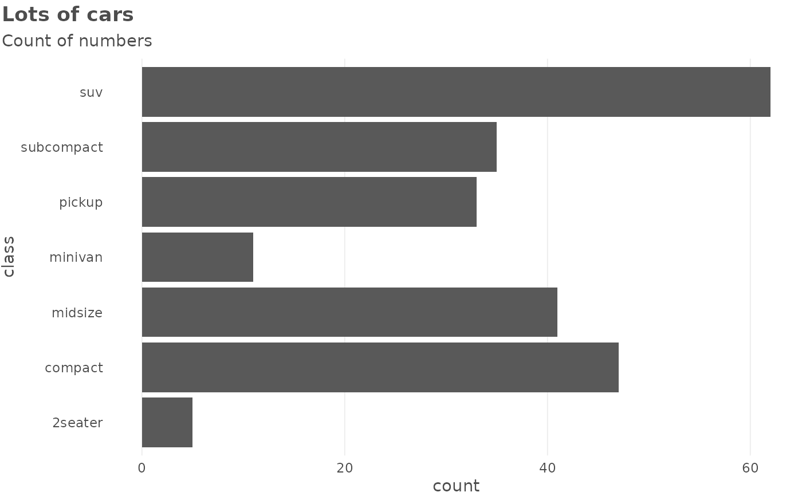
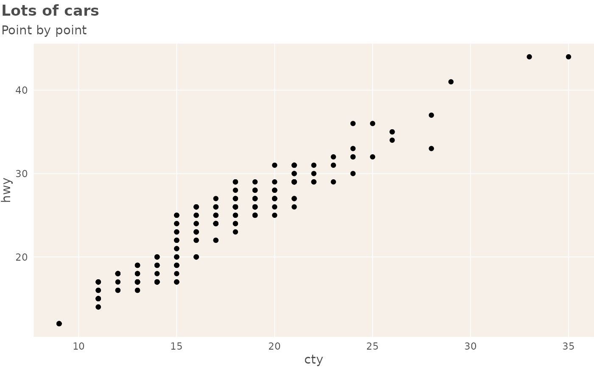
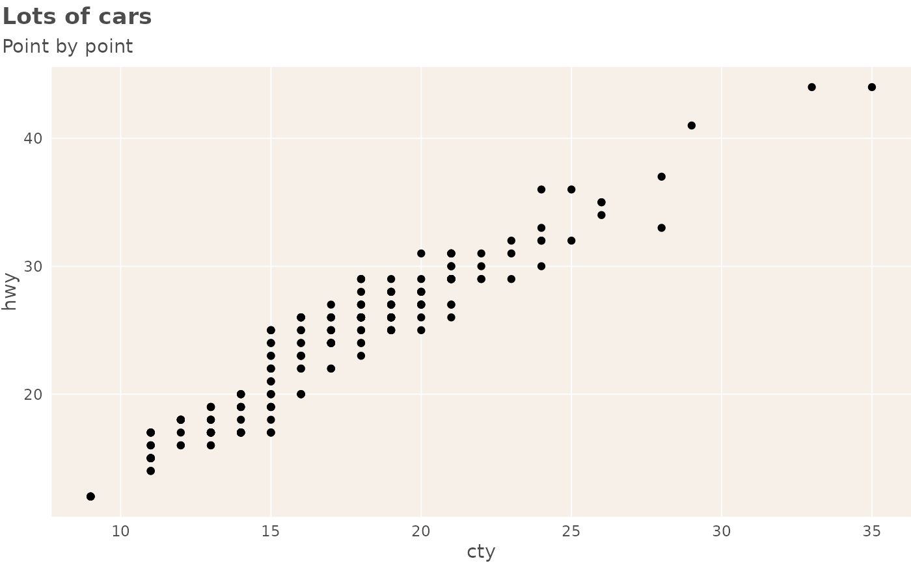

A wrapper around theme() which provides several shortcuts to setting common
options and several defaults. See more in Details.
Usage
theme_schola(
gridlines = c("y", "x", "both", "scatter"),
base_size = 11,
family = "Ubuntu Condensed",
title_family = "Ubuntu",
margins = TRUE,
plot.title.position = "plot",
axis_titles = TRUE,
multiplot = FALSE,
...
)Arguments
- gridlines
Whether to display major gridlines along
"y"(the default),"x","both"or draw a"scatter", which has both gridlines and inverted colours.- base_size
Numeric text size in pts, affects all text in plot. Defaults to 11.
- family, title_family
font family to use for the (title of the) plot. Defaults to
"Ubuntu"for title and"Ubuntu Condensed"for plot.- margins
logical, whether to draw margins around the plot or not (the default).
- plot.title.position
where to align the title. Either "plot" (the default, difference from
theme()default) or"panel".- axis_titles
logical, draw axis titles? Defaults to
TRUE.- multiplot
if set to TRUE, provides better styling for small multiples created using
facet_*.- ...
Arguments passed on to
ggplot2::themelineall line elements (
element_line())rectall rectangular elements (
element_rect())titleall title elements: plot, axes, legends (
element_text(); inherits fromtext)pointall point elements (
element_point())polygonall polygon elements (
element_polygon())geomdefaults for geoms (
element_geom())spacingall spacings (
unit())aspect.ratioaspect ratio of the panel
axis.text,axis.text.x,axis.text.y,axis.text.x.top,axis.text.x.bottom,axis.text.y.left,axis.text.y.right,axis.text.theta,axis.text.rtick labels along axes (
element_text()). Specify all axis tick labels (axis.text), tick labels by plane (usingaxis.text.xoraxis.text.y), or individually for each axis (usingaxis.text.x.bottom,axis.text.x.top,axis.text.y.left,axis.text.y.right).axis.text.*.*inherits fromaxis.text.*which inherits fromaxis.text, which in turn inherits fromtextaxis.ticks,axis.ticks.x,axis.ticks.x.top,axis.ticks.x.bottom,axis.ticks.y,axis.ticks.y.left,axis.ticks.y.right,axis.ticks.theta,axis.ticks.rtick marks along axes (
element_line()). Specify all tick marks (axis.ticks), ticks by plane (usingaxis.ticks.xoraxis.ticks.y), or individually for each axis (usingaxis.ticks.x.bottom,axis.ticks.x.top,axis.ticks.y.left,axis.ticks.y.right).axis.ticks.*.*inherits fromaxis.ticks.*which inherits fromaxis.ticks, which in turn inherits fromlineaxis.minor.ticks.x.top,axis.minor.ticks.x.bottom,axis.minor.ticks.y.left,axis.minor.ticks.y.right,axis.minor.ticks.theta,axis.minor.ticks.rminor tick marks along axes (
element_line()).axis.minor.ticks.*.*inherit from the corresponding major ticksaxis.ticks.*.*.axis.ticks.length,axis.ticks.length.x,axis.ticks.length.x.top,axis.ticks.length.x.bottom,axis.ticks.length.y,axis.ticks.length.y.left,axis.ticks.length.y.right,axis.ticks.length.theta,axis.ticks.length.rlength of tick marks (
unit).axis.ticks.lengthinherits fromspacing.axis.minor.ticks.length,axis.minor.ticks.length.x,axis.minor.ticks.length.x.top,axis.minor.ticks.length.x.bottom,axis.minor.ticks.length.y,axis.minor.ticks.length.y.left,axis.minor.ticks.length.y.right,axis.minor.ticks.length.theta,axis.minor.ticks.length.rlength of minor tick marks (
unit), or relative toaxis.ticks.lengthwhen provided withrel().axis.line,axis.line.x,axis.line.x.top,axis.line.x.bottom,axis.line.y,axis.line.y.left,axis.line.y.right,axis.line.theta,axis.line.rlines along axes (
element_line()). Specify lines along all axes (axis.line), lines for each plane (usingaxis.line.xoraxis.line.y), or individually for each axis (usingaxis.line.x.bottom,axis.line.x.top,axis.line.y.left,axis.line.y.right).axis.line.*.*inherits fromaxis.line.*which inherits fromaxis.line, which in turn inherits fromlinelegend.backgroundbackground of legend (
element_rect(); inherits fromrect)legend.marginthe margin around each legend (
margin()); inherits frommargins.legend.spacing,legend.spacing.x,legend.spacing.ythe spacing between legends (
unit).legend.spacing.x&legend.spacing.yinherit fromlegend.spacingor can be specified separately.legend.spacinginherits fromspacing.legend.keybackground underneath legend keys (
element_rect(); inherits fromrect)legend.key.size,legend.key.height,legend.key.widthsize of legend keys (
unit); key background height & width inherit fromlegend.key.sizeor can be specified separately. In turnlegend.key.sizeinherits fromspacing.legend.key.spacing,legend.key.spacing.x,legend.key.spacing.yspacing between legend keys given as a
unit. Spacing in the horizontal (x) and vertical (y) direction inherit fromlegend.key.spacingor can be specified separately.legend.key.spacinginherits fromspacing.legend.key.justificationJustification for positioning legend keys when more space is available than needed for display. The default,
NULL, stretches keys into the available space. Can be a location like"center"or"top", or a two-element numeric vector.legend.frameframe drawn around the bar (
element_rect()).legend.tickstick marks shown along bars or axes (
element_line())legend.ticks.lengthlength of tick marks in legend (
unit()); inherits fromlegend.key.size.legend.axis.linelines along axes in legends (
element_line())legend.textlegend item labels (
element_text(); inherits fromtext)legend.text.positionplacement of legend text relative to legend keys or bars ("top", "right", "bottom" or "left"). The legend text placement might be incompatible with the legend's direction for some guides.
legend.titletitle of legend (
element_text(); inherits fromtitle)legend.title.positionplacement of legend title relative to the main legend ("top", "right", "bottom" or "left").
legend.positionthe default position of legends ("none", "left", "right", "bottom", "top", "inside")
legend.position.insideA numeric vector of length two setting the placement of legends that have the
"inside"position.legend.directionlayout of items in legends ("horizontal" or "vertical")
legend.byrowwhether the legend-matrix is filled by columns (
FALSE, the default) or by rows (TRUE).legend.justificationanchor point for positioning legend inside plot ("center" or two-element numeric vector) or the justification according to the plot area when positioned outside the plot
legend.justification.top,legend.justification.bottom,legend.justification.left,legend.justification.right,legend.justification.insideSame as
legend.justificationbut specified perlegend.positionoption.legend.locationRelative placement of legends outside the plot as a string. Can be
"panel"(default) to align legends to the panels or"plot"to align legends to the plot as a whole.legend.boxarrangement of multiple legends ("horizontal" or "vertical")
legend.box.justjustification of each legend within the overall bounding box, when there are multiple legends ("top", "bottom", "left", "right", "center" or "centre")
legend.box.marginmargins around the full legend area, as specified using
margin(); inherits frommargins.legend.box.backgroundbackground of legend area (
element_rect(); inherits fromrect)legend.box.spacingThe spacing between the plotting area and the legend box (
unit); inherits fromspacing.panel.borderborder around plotting area, drawn on top of plot so that it covers tick marks and grid lines. This should be used with
fill = NA(element_rect(); inherits fromrect)panel.spacing,panel.spacing.x,panel.spacing.yspacing between facet panels (
unit).panel.spacing.x&panel.spacing.yinherit frompanel.spacingor can be specified separately.panel.spacinginherits fromspacing.panel.ontopoption to place the panel (background, gridlines) over the data layers (
logical). Usually used with a transparent or blankpanel.background.panel.widths,panel.heightsSizes for panels (
units). Can be a single unit to set the total size for the panel area, or a unit vector to set the size of individual panels.plot.backgroundbackground of the entire plot (
element_rect(); inherits fromrect)plot.title.position,plot.caption.positionAlignment of the plot title/subtitle and caption. The setting for
plot.title.positionapplies to both the title and the subtitle. A value of "panel" (the default) means that titles and/or caption are aligned to the plot panels. A value of "plot" means that titles and/or caption are aligned to the entire plot (minus any space for margins and plot tag).plot.subtitleplot subtitle (text appearance) (
element_text(); inherits fromtitle) left-aligned by defaultplot.captioncaption below the plot (text appearance) (
element_text(); inherits fromtitle) right-aligned by defaultplot.tagupper-left label to identify a plot (text appearance) (
element_text(); inherits fromtitle) left-aligned by defaultplot.tag.positionThe position of the tag as a string ("topleft", "top", "topright", "left", "right", "bottomleft", "bottom", "bottomright") or a coordinate. If a coordinate, can be a numeric vector of length 2 to set the x,y-coordinate relative to the whole plot. The coordinate option is unavailable for
plot.tag.location = "margin".plot.tag.locationThe placement of the tag as a string, one of
"panel","plot"or"margin". Respectively, these will place the tag inside the panel space, anywhere in the plot as a whole, or in the margin around the panel space.strip.clipshould strip background edges and strip labels be clipped to the extend of the strip background? Options are
"on"to clip,"off"to disable clipping or"inherit"(default) to take the clipping setting from the parent viewport.strip.placementplacement of strip with respect to axes, either "inside" or "outside". Only important when axes and strips are on the same side of the plot.
strip.text,strip.text.x,strip.text.y,strip.text.x.top,strip.text.x.bottom,strip.text.y.left,strip.text.y.rightfacet labels (
element_text(); inherits fromtext). Horizontal facet labels (strip.text.x) & vertical facet labels (strip.text.y) inherit fromstrip.textor can be specified separately. Facet strips have dedicated position-dependent theme elements (strip.text.x.top,strip.text.x.bottom,strip.text.y.left,strip.text.y.right) that inherit fromstrip.text.xandstrip.text.y, respectively. As a consequence, some theme stylings need to be applied to the position-dependent elements rather than to the parent elementsstrip.switch.pad.grid,strip.switch.pad.wrapspace between strips and axes when strips are switched (
unit); inherits fromspacing.completeset this to
TRUEif this is a complete theme, such as the one returned bytheme_grey(). Complete themes behave differently when added to a ggplot object. Also, when settingcomplete = TRUEall elements will be set to inherit from blank elements.validateTRUEto runcheck_element(),FALSEto bypass checks.
Details
In particular, the theme: - displays only major gridlines, allowing you to quickly switch which ones; gridlines are thinner, panel has white background
provides quick option to draw a scatter with grey background - switches defaults for title alignment - turns axis labels off by default: in practice, x axes are often obvious and y axes are better documented in a subtitle - sets backgrounds to a schola-style shade - sets plot title in bold and 120% of base_size
All the changed defaults can be overriden by another call to theme().
See "Making charts" vignette for more complex examples: vignette('charts', package = 'reschola').
Note
The default fonts - Ubuntu and Ubuntu Condensed - are contained in this
package and can be registered with the system using
register_reschola_fonts(). You should then install them onto your system
like any font, using files in the directories described in the
register_reschola_fonts() messsage.
See also
Other Making charts:
flush_axis,
plot_lollipop(),
prepare_lollipop_data(),
schola_barplot()
Examples
library(ggplot2)
# NOTE when `theme_schola()` is used in these examples, fonts
# are set to 'sans' to pass checks on computers without the
# Ubuntu included. If you have these fonts (see Note) you can
# leave these parameters at their default values.
use_reschola_fonts("sans")
# the basic plot for illustration, theme not used
p <- ggplot(mpg) +
geom_bar(aes(y = class)) +
labs(title = "Lots of cars", subtitle = "Count of numbers")
# using `theme_schola()` defaults
p +
theme_schola("x", family = "sans", title_family = "sans")

# in combination with `flush_axis`:
p +
theme_schola("x", family = "sans", title_family = "sans") +
scale_x_continuous(expand = flush_axis)
 # scatter
ggplot(mpg) +
geom_point(aes(cty, hwy)) +
theme_schola("scatter", family = "sans", title_family = "sans") +
labs(title = "Lots of cars", subtitle = "Point by point")

# Smaller text, flush alignment
ggplot(mpg) +
geom_point(aes(cty, hwy)) +
theme_schola("scatter",
base_size = 9, family = "sans", title_family = "sans"
) +
labs(title = "Lots of cars", subtitle = "Point by point")
# scatter
ggplot(mpg) +
geom_point(aes(cty, hwy)) +
theme_schola("scatter", family = "sans", title_family = "sans") +
labs(title = "Lots of cars", subtitle = "Point by point")

# Smaller text, flush alignment
ggplot(mpg) +
geom_point(aes(cty, hwy)) +
theme_schola("scatter",
base_size = 9, family = "sans", title_family = "sans"
) +
labs(title = "Lots of cars", subtitle = "Point by point")
 # Override defaults changed inside `theme_schola()`
ggplot(mpg) +
geom_point(aes(cty, hwy)) +
theme_schola("scatter",
base_size = 9, family = "sans", title_family = "sans"
) +
labs(title = "Lots of cars", subtitle = "Point by point") +
theme(panel.background = element_rect(fill = "lightpink"))
# Override defaults changed inside `theme_schola()`
ggplot(mpg) +
geom_point(aes(cty, hwy)) +
theme_schola("scatter",
base_size = 9, family = "sans", title_family = "sans"
) +
labs(title = "Lots of cars", subtitle = "Point by point") +
theme(panel.background = element_rect(fill = "lightpink"))